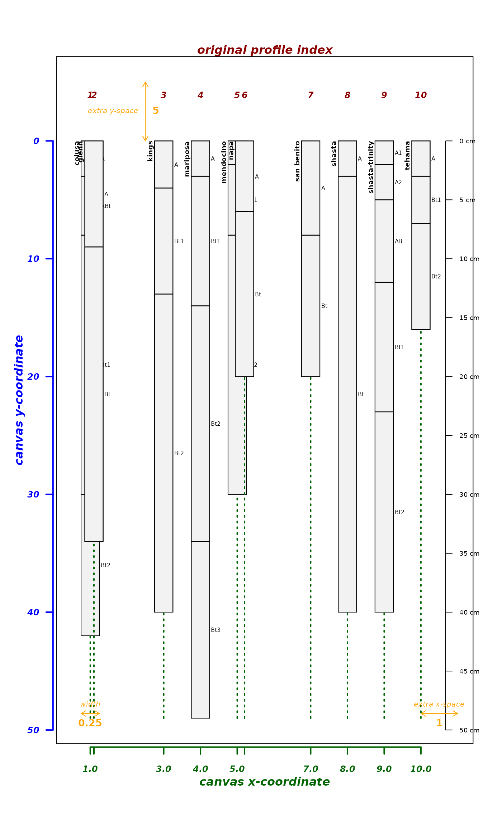
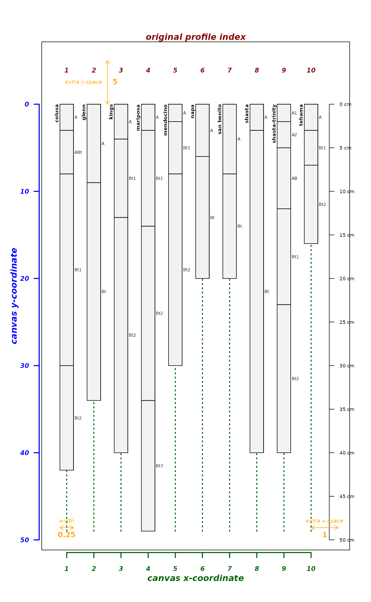
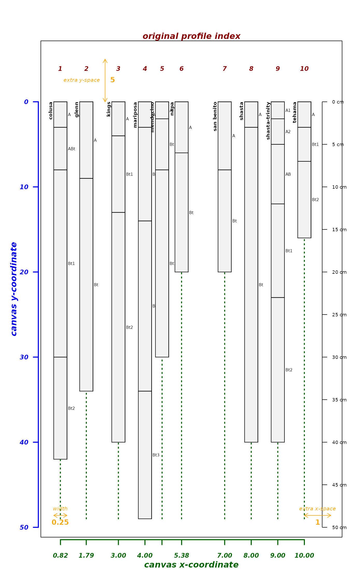
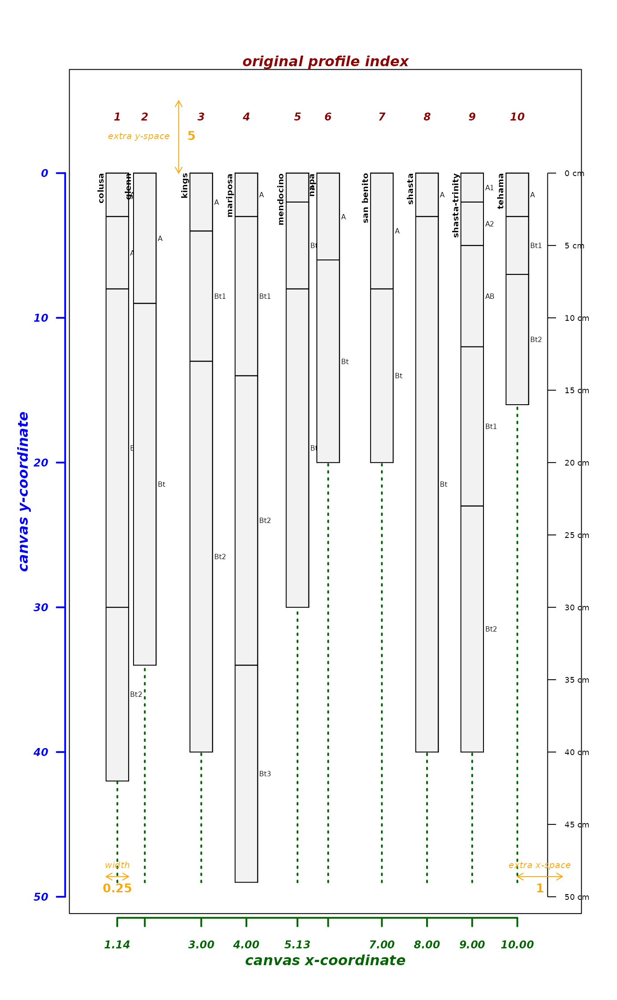
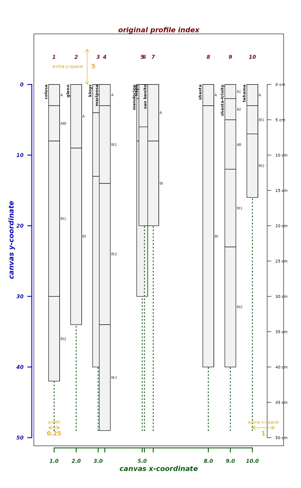
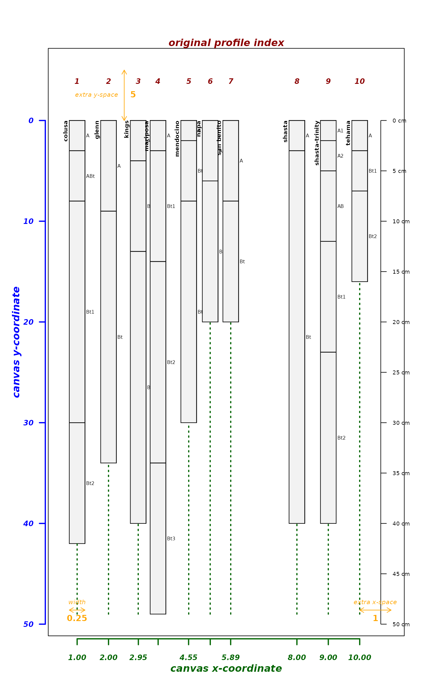
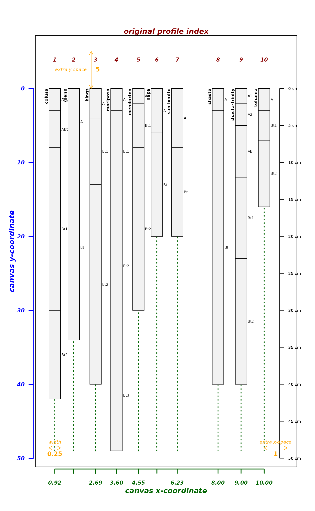
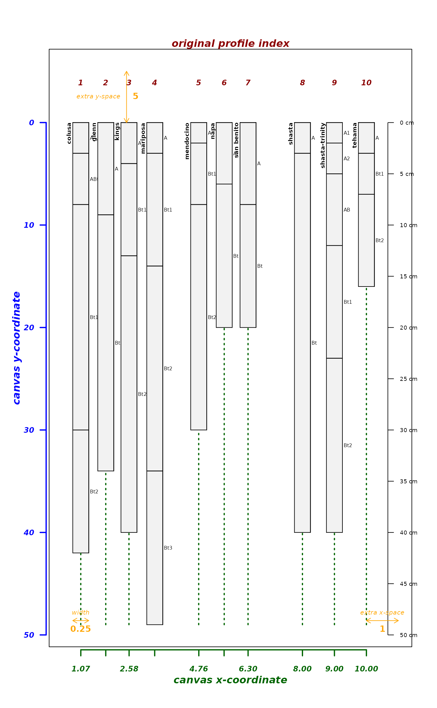

Create a visual explanation for the many arguments to plotSPC. Call this function instead of plotSPC, all objects after x are passed on to plotSPC. Nearly all of the figures in the Introduction to SoilProfileCollection Objects tutorial are created with this function.
explainPlotSPC(x, ...)a SoilProfileCollection object
arguments passed to plotSPC
a list of internally-used ordering vectors and graphical offsets / scaling factors
# sample data
data(sp4)
depths(sp4) <- id ~ top + bottom
# proposed vector of relative positions, overlap likely
pos <- c(1, 1.1, 3, 4, 5, 5.2, 7, 8, 9, 10)
# try it
explainPlotSPC(sp4, name = 'name', relative.pos=pos)

# attempt to fix using an integer sequence, short-circut will prevent adjustments
explainPlotSPC(sp4, name = 'name', relative.pos = fixOverlap(1:10))

# attempt to adjust using defaults
explainPlotSPC(sp4, name = 'name', relative.pos = fixOverlap(pos))
#> 3 iterations

# attempt to adjust and tinker with defaults
explainPlotSPC(sp4, name = 'name', relative.pos = fixOverlap(pos, adj = 0.2))
#> 77 iterations

# enforce larger space between
explainPlotSPC(sp4, name = 'name', relative.pos = fixOverlap(pos, thresh = 0.7))
#> 15 iterations
# more complex adjustments required
pos <- c(1, 2, 3, 3.3, 5, 5.1, 5.5, 8, 9, 10)
# tinker
explainPlotSPC(sp4, name = 'name', relative.pos = pos)

explainPlotSPC(sp4, name = 'name', relative.pos = fixOverlap(pos))
#> 13 iterations

explainPlotSPC(sp4, name = 'name', relative.pos = fixOverlap(pos,
thresh = 0.7))
#> 172 iterations

explainPlotSPC(sp4, name = 'name', relative.pos = fixOverlap(pos,
thresh = 0.7, adj = 0.2))
#> 199 iterations

# SANN: solution requires many iterations, and will not always converge
explainPlotSPC(sp4, name = 'name',
relative.pos = fixOverlap(pos, thresh = 0.85, adj = 0.2)
)
#> 413 iterations
# electrostatics: solution requires larger charge (q)
explainPlotSPC(sp4, name = 'name',
relative.pos = fixOverlap(pos, thresh = 0.85, method = 'E', q = 2)
)
#> 5 iterations